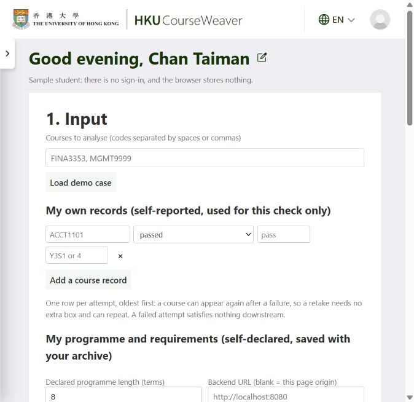

Follows the whole chain
A prerequisite of a prerequisite still counts. The tool walks the graph both ways, so "can I take FINA3353 next year" turns into the four courses that have to happen first.
You type the courses you want and the courses you have taken. HKU Course Weaver answers with what is missing, what will clash, and which terms could work — and shows the public page each rule came from, so you can check it yourself.
A prerequisite of a prerequisite still counts. The tool walks the graph both ways, so "can I take FINA3353 next year" turns into the four courses that have to happen first.
If a rule names a course outside the curated dataset, the answer says it cannot be verified rather than silently passing it. Same for an in-progress course against a minimum grade: the answer is an assumption, and it is labelled as one.
Feasible term-by-term plans are printed in chronological order. The ordering carries no preference: choosing between them is the student's job, not the tool's.

Command-line output for the same question, with a refusal at the end:
Course FINA3353 - Regulatory, operational and valuation issues in finance institutions (6.0 credits)
Prerequisites / dependency chain (upstream):
FINA2320 -> FINA3353 [Investments and portfolio analysis; pass required]
=== Constraint check ===
Blocked points:
FINA3353 needs FINA2320 [pass, verified=true] - no record of FINA2320; complete it before FINA3353
Soft warnings (non-blocking):
[LONG_CHAIN/soft] Long dependency chain of 4 courses (ACCT1101 -> FINA1310 -> FINA2320 -> FINA3353) ...
Feasible options (ordering carries no preference):
Y1S1: ACCT1101, ECON1210
Y1S2: FINA1310
Y2S1: FINA2320
Y3S1: FINA3353These are product boundaries, not missing features:
Every record carries the public URL it was read from and the date it was read; the repository ships that manifest, so a reviewer can re-open the page and compare. Nothing here is scraped from a source that requires permission.
| What | Public source |
|---|---|
| Course descriptions, prerequisites, co-requisites, exclusions | Faculty of Business and Economics course descriptions 2026-27 (PDF); Faculty of Science course pages |
| Class times and sections | Faculty of Engineering BEng Year-1 timetable (PDF, 2023-24) — the only public document found that prints class letters |
| Programme requirements | BEng in Mechanical Engineering syllabus 2025-26 (PDF) |
Java 21 or newer and Maven. The repository is private; the teaching team has access.
mvn -B -q clean package -DskipTests
java -jar courseweaver-server/target/courseweaver-server-0.1.0-SNAPSHOT.jar
# then open http://localhost:8080/ , or use the CLI:
scripts\hcw.cmd --course=FINA3353The backend loads the checked-in dataset at start-up and prints how many records it read, so "which data am I looking at" is never a guess.